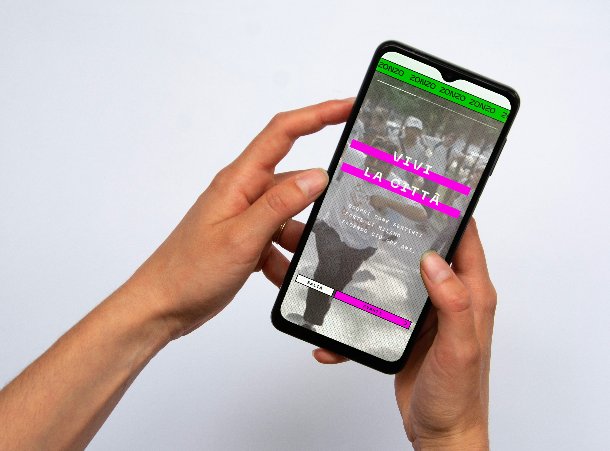
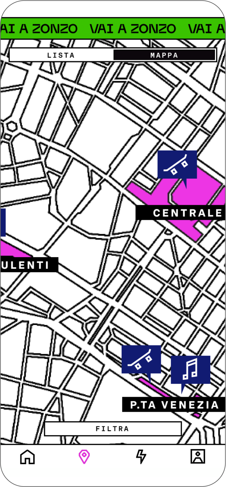
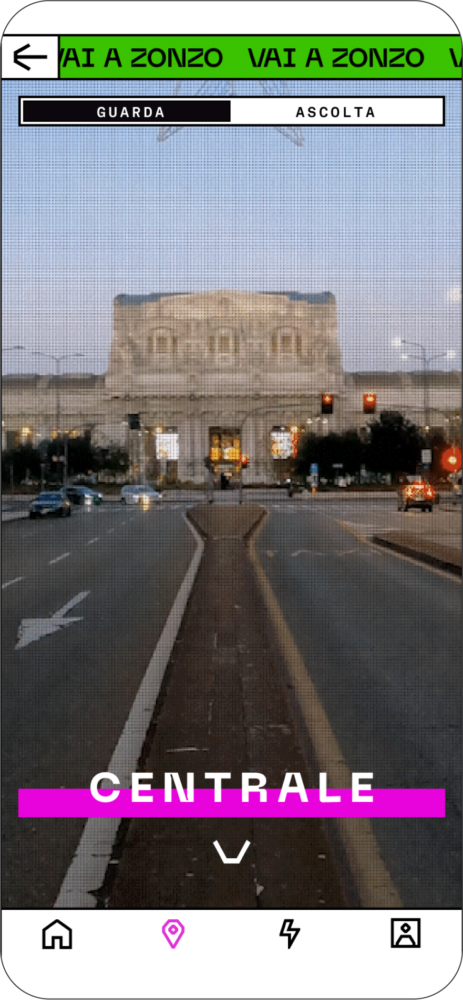
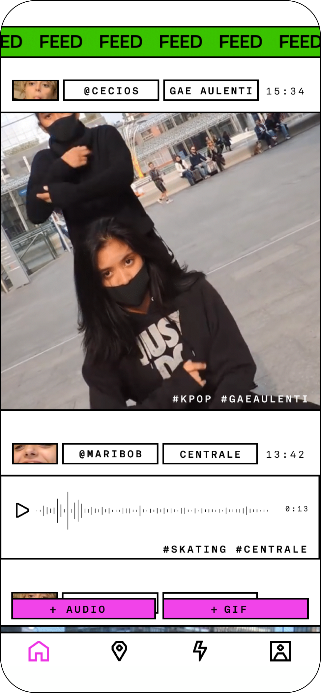
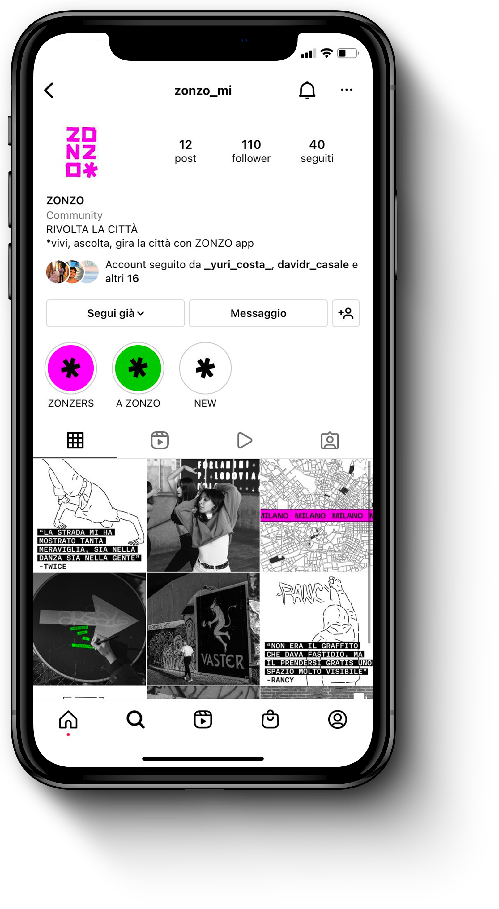
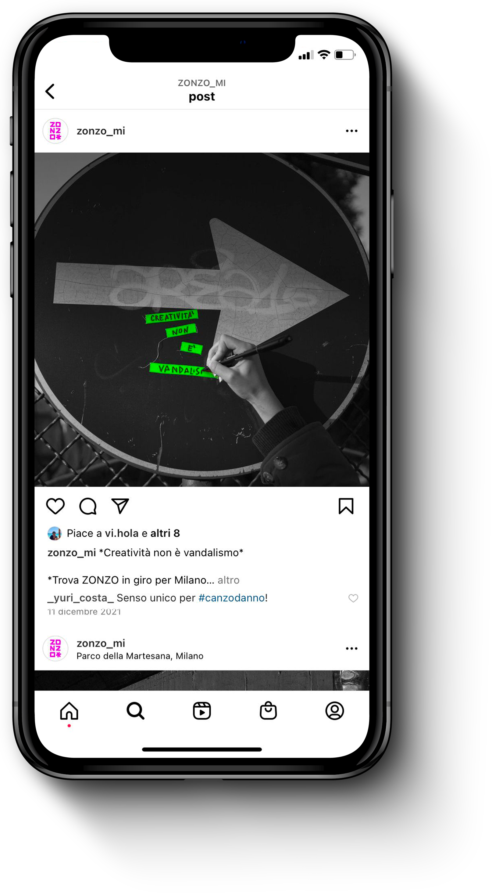
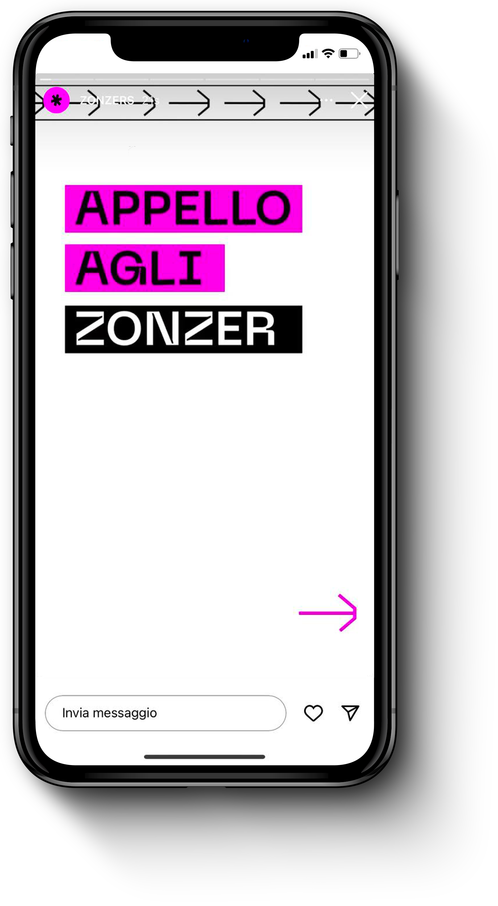
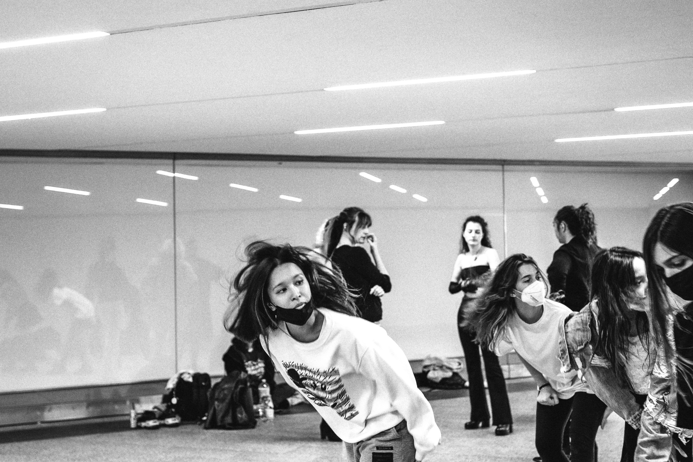
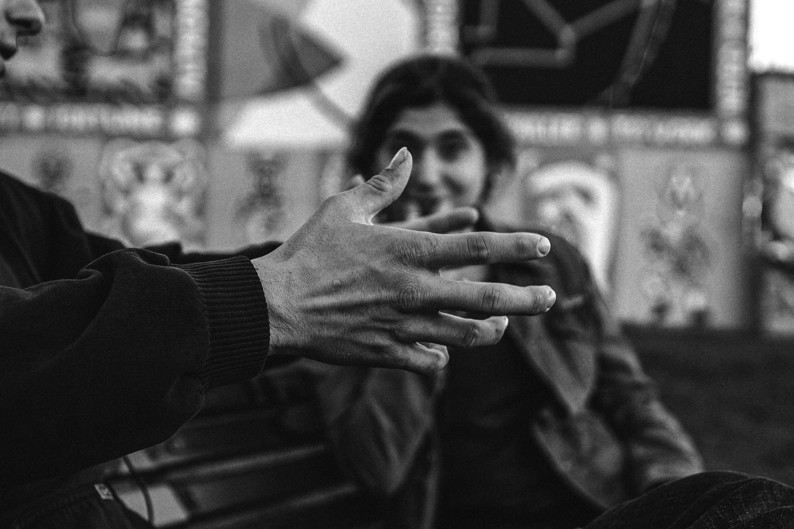
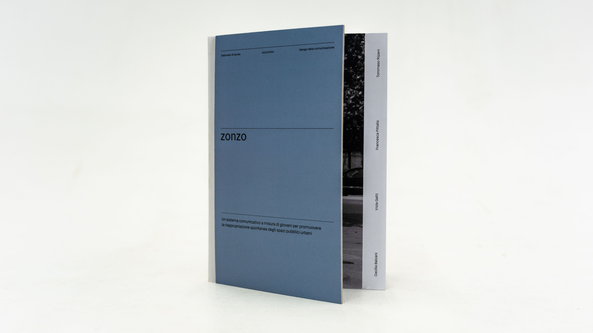

→ GUERRILLA MARKETING
Across the city short and provocative sentences appear, written on simple scraps of tape. A non-invasive and non-permanent action to stimulate curiosity and reflection.
→ POSTER CAMPAIGN

Series of photographic and materic posters that ask for more space and freedom of expression for the young population of Milan.
→ MOBILE APP




The Zonzo mobile app works as a collector of activities. The map function highlights the places that have already been reappropriated by the actions of young people as skating, dancing, writing poems or drawing murales. The feed shows gifs or audio tracks of the other zonzers. Each Zonzer can personalize its personal profile. The Activity section is collection of notions and curiosities about the differnt activities.
→ SOCIAL MEDIA



The instagram profile Zonzo_mi enables direct interaction with Zonzo users, who can actively contribute to the platform's expansion by tagging Zonzo in newly reclaimed spaces.
→ RESEARCH




This field research investigates how young people spontaneously reclaim Milan's public spaces, transforming them through shared passions and innovative uses that differ from their original intent. By documenting activities such as skating in Stazione Centrale, dancing in Piazza Gae Aulenti, the MEP poetry posters, and murals along the Naviglio Martesana, the study highlights how hidden urban areas are rehabilitated into vibrant social hubs. Using photographic reportage and interviews, the project captures the shift from empty backgrounds to meaningful places, exploring how these practices fulfill the community's need for expression and belonging.
→ ZONZO-BOOK

The project book features a hand-stitched Bodoniana binding (Bodoni binding), characterized by a white bookcloth cover designed two centimeters shorter than the text block, paired with printed endpapers. Inside, the dynamic layout includes several pages with a shorter trim at the bottom, an inserted smaller four-page booklet (quarter-sheet), and a gatefold page. In 2022, the publication was showcased at Graphic Days in Turin.